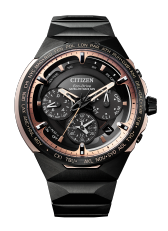
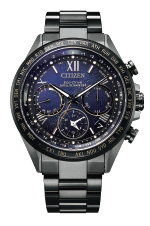
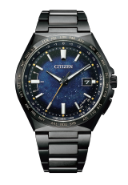
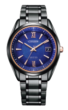
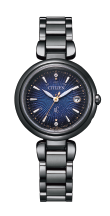

シチズン チタニウム技術50周年記念フェア
2021年1月2日(土)～2021年1月31日(日)まで
シチズン チタニウム技術50周年記念フェアを開催いたします。
期間中お買い上げのお客様にはノベルティを差し上げます。
是非、この機会をご利用ください。心よりご来店をお待ちしております。
※ノベルティは無くなり次第終了となります
チタニウム技術50年の研鑚
その結晶と新たな可能性がここに。
キズに強く、軽く、サビにくく、肌にやさしく、しかも美しい。
シチズンの独自素材＂スーパーチタニウム™＂をまとった
チタニウム技術50周年を記念するフラッグシップモデルと、
ブランドを横断するコズミックブルー コレクションが登場。
それぞれ「宇宙」をイメージしたデザインで、
宇宙開発での活用が予定されているスーパーチタニウム™ の
さらなる進化への期待が込められています。
シチズン独自のチタニウム加工技術と表面硬化技術によってつくられる、
キズに強く、軽く、肌にやさしく、サビにくい独自素材「スーパーチタニウム™」

宇宙に挑む、可能性をひらく。
シチズン チタニウム技術50周年記念限定モデル
SATELLITE WAVE GPS F950
無限の可能性を秘めた「宇宙」がテーマのスーパーチタニウムTMをまとった、
ブランドを横断する限定4モデルが誕生。
銀河をイメージした鮮やかなブルーの文字板やデユラテクトDLC（ブラック）により
艶やかなダークグレーなどコズミックブルーの名の通り、
「宇宙」をテーマとしたデザインが、スーパーチタニウムTMの無限の可能性を物語ります。
各モデル数量限定、シリアルナンバー入りの特別な1本です。
精緻に計算し尽くされた
2体構造のケース
キレのある造形美を創り出す
シャープなエッジ
2つのデュラテクトによる、
特別なカラーリング
-

CC4025-82E
エコ・ドライブGPS衛星電波時計 F950
［世界限定 550本］
¥550,000（税込）
（税抜価格 ¥500,000
宇宙に挑む、可能性をひらく。
シチズン チタニウム技術50周年記念限定モデル
コズミックブルー コレクション
無限の可能性を秘めた「宇宙」がテーマのスーパーチタニウム™をまとった、
ブランドを横断する限定4モデルが誕生。
銀河をイメージした鮮やかなブルーの文字板やデユラテクトDLC（ブラック）により
艶やかなダークグレーなどコズミックブルーの名の通り、
「宇宙」をテーマとしたデザインが、スーパーチタニウム™の無限の可能性を物語ります。
各モデル数量限定、シリアルナンバー入りの特別な1本です。
-
宇宙の壮大さを印象づける青と濃紺のグラデーション。
ローマ数字がエレガントな
エコ・ドライブGPS衛星電波時計。 -
広い文字板に、放射状にひろがる宇宙空間。
無限の可能性を宿した特別なアテッサ。 -
銀河のごとくラメがきらめくエレガントなエクシード。
サファイアガラスの外周部は、
宇宙の神秘現象「黄道光」を表現。 -
奥深く繊細なきらめきを放つ星屑のパターン。
色あせない黒が美しい
艶やかなダークグレーが輝くクロスシー。
-

CC4015-86L
エコ・ドライブ
GPS衛星電波時計 F950
[世界限定 1,300本］
¥286,000（税込）
(税抜価格 ¥260,000) -

CB0219-50L
エコ・ドライブ電波時計
[世界限定 2,200本］
¥110,000（税込
(税抜価格 ¥100,000） -

AS7164-99L
エコ・ドライブ電波時計
[限定 700本］
¥209,000（税込）
(税抜価格 ¥190,000 -

ES9466-57L
エコ・ドライブ電波時計
[世界限定 1,500本］
¥110,000（税込）
(税抜価格 ¥100,000）
シチズン チタニウム技術50周年記念フェア
2021年1月2日(土)～2021年1月31日(日)まで
シチズン チタニウム技術50周年記念フェアを開催いたします。
フェア期間中お買い上げのお客様にはノベルティを差し上げます。
是非、この機会をご利用ください。心よりご来店をお待ちしております。
※ノベルティは無くなり次第終了となります。
-
CITIZEN FLAGSHIP STORE TOKYO
東京都中央区銀座6-10-1 GINZA SIX1F
03-6263-9987CITIZEN FLAGSHIP STORE OSAKA
大阪府大阪市中央区心斎橋筋1丁目1番5号
06-4708-8508 -
大丸 札幌店 5階 時計売場
北海道札幌市中央区北5条西4-7
011-828-1111丸井今井 札幌本店 一条館8階 時計
北海道札幌市中央区南1条西2-11
011-205-2575 -
金正堂本店 弘前店
青森県弘前市土手町45-1
0172-34-3711道又時計店
岩手県盛岡市大通3-1-18
019-651-1234 -
三原堂
宮城県仙台市青葉区中央2-5-2
022-222-2028タケカワ G-TIME店
栃木県宇都宮市江野町5-8
028-651-0328 -
タニダ 八木橋店
埼玉県熊谷市仲町74 八木橋百貨店5階
048-525-5470そごう 千葉店 4階 時計サロン
千葉県千葉市中央区新町1000
043-245-8365 -
東武百貨店 船橋店 5階4番地 時計サロン
千葉県船橋市本町7-1-1
047-425-2211大丸 東京店 10階 時計サロン
東京都千代田区丸の内1-9-1
03-3212-8011 -
日新堂 銀座本店
東京都中央区銀座7-9-13
03-3571-5611京王百貨店 新宿店 6階 時計売場
東京都新宿区西新宿1-1-4
03-3342-2111 -
東武百貨店 池袋店 6階10番地 時計サロン
東京都豊島区西池袋1-1-25
03-5951-8272エルサカエ 富山総本店
富山県富山市奥田町3-14
076-431-3200 -
ながの東急百貨店 別館シェルシェ 4階時計売場
長野県長野市南千歳1-1-1
0262-26-3608安心堂 沼津店
静岡県沼津市三枚橋472-2
055-925-8100 -
ジェイアール名古屋タカシマヤ 10階 時計サロン
愛知県名古屋市中村区名駅1-1-4
052-566-8423松坂屋 名古屋店 北館5階 時計サロン
愛知県名古屋市中区栄3-16-1
052-264-2694 -
サカイ 本店
愛知県江南市古知野町広見10
0587-56-2847大丸 京都店 6階 時計サロン
京都府京都市下京区四条通高倉西入立売西町79
075-211-8111 -
髙島屋京都店 5階 時計サロン
京都府京都市下京区四条通河原町西入真町52
075-221-8811ジェイアール京都伊勢丹 9階=時計
京都府京都市下京区烏丸通塩小路下ル東塩小路町
075-352-1111 -
大丸 梅田店 11階 時計売場
大阪府大阪市北区梅田3-1-1
06-6343-1231髙島屋大阪店 5階 タカシマヤ ウオッチメゾン
(スイスホテル南海大阪5階）
大阪府大阪市中央区難波5-1-5
06-6631-1101 -
大丸 心斎橋店 本館6階
大阪府大阪市中央区心斎橋筋1-7-1
06-6271-1231あべのハルカス 近鉄本店 タワー館11階 時計サロン
大阪府大阪市阿倍野区阿倍野筋1-1-43
06-6624-1111 -
大丸 神戸店 8階 時計サロン
兵庫県神戸市中央区明石町40
078-331-8121岡山 天満屋 ウォッチギャラリー 2階
岡山県岡山市北区表町1-11-38 ザ・コートヤード表町
086-231-7764 -
そごう 広島店 本館8階 時計サロン
広島県広島市中区基町6-27
082-512-7344大丸 下関店 4階 wrist gallery Tempo
山口県下関市竹崎町4-4-10
083-232-1111 -
ハラダ
徳島県徳島市東新町1-21-1
088-622-6872小倉 井筒屋 本館2階 時計サロン
福岡県北九州市小倉北区船場町1-1
093-522-2529 -
大丸 福岡天神店 東館エルガーラ4階 時計売場
福岡県福岡市中央区天神1-4-1
092-712-8181博多阪急 M3階 ウォッチギャラリー
福岡県福岡市博多区博多駅中央街1-1
092-461-1381 -
鶴屋百貨店 東館5階 時計売場
熊本県熊本市中央区手取本町6-1
096-327-3650山形屋 ウォッチギャラリー
鹿児島県鹿児島市金生町3番1号
099-227-6270 -
日髙本店 プロショップ
宮崎県宮崎市橘通東3-4-6
0985-26-1102
フェア開催店舗リスト